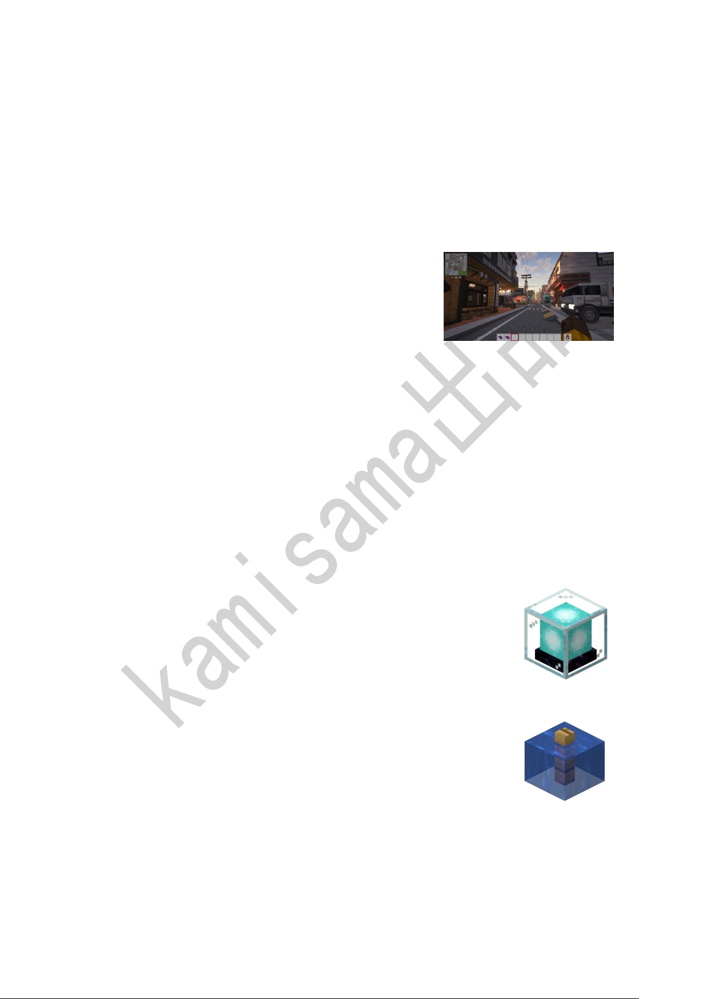

kamisama 出品
D./advancement grant Steve everything：移除玩家 Steve 所有已获得的进度
二、选择题 II（本大题共 5 小题，每小题 3 分，共 15 分。每小题列出的四个备选项中只有
一项是符合题目要求的，不选、多选、错选均不得分）
6.某玩家在玩生存模式时，遇到了以下情况。下列说法中，错误的是。
A.玩家在沙漠水井处可以找到可疑的沙子，可以进行考古
B.玩家无法给同一个弓附魔无限和经验修补，但是用指令强制将两个魔咒附在同一个弓上
可以同时使两个魔咒生效
C.当鞘翅耐久归 0 后，将不会消失（耐久度保持在 1），并可以使用线进行修复
D.玩家在下界挖下界残骸时，可以使用床来炸出残骸，可以提高采矿效率
7.如右图，是 MC up 主世隐所复刻的绝区零六分街地图。主
要使用了方块小镇和方块建模两个模组，并使用了辅助模
组 Axiom 辅助搭建场景，其特点是可以比较精细地搭建建
筑，而 Axiom 则拥有比 Worldedit 更强大的功能，能够更
好地进行建造。下列说法中，错误的是。
A.使用资源包可以更改游戏中方块、物品、UI 界面等的贴图。在资源包中，方块贴图的
图片必须使用.jpg 格式的图片
B.所有模组都需要有模组加载器才能正常运行，常用的模组加载器有 Forge（Neoforge）
和 Fabric
C.图中的场景使用的光影是 ComplementaryUnbound。加载光影需要有光影加载器，常用
的光影加载模组有 Optifine 和 Iris Shaders
D.左上角的小地图是加装了 Xaero 的小地图与 Xaero 的世界地图两个模组所实现的
8.下面关于 Minecraft 的说法中，正确的是
A.在 Minecraft 中，附魔了穿透的三叉戟对水生生物的伤害将会增加
B.玩家在探索要塞时，可以在要塞图书馆中找到锻造模板
C.将药水倒入炼药锅中，手持箭右键炼药锅可以制作药箭
D.给两匹马分别使用药水给予跳跃提升和迅捷的效果，则两匹马繁殖后的马将同时获得两
种效果
9.如右图，信标是 Minecraft 中特殊的功能方块。下面关于信标的说法中，
错误的是。
A.在信标上方放置染色玻璃，则信标发出的光柱颜色将变成该染色玻璃
的颜色
B.信标是光源方块，其发出的光线照亮的范围大致呈菱形
C.信标被激活后可以提供效果，如急迫、迅捷、力量等
D.信标的采集需要使用附有精准采集的工具进行破坏
10.方块的含水状态是指水源方块填充了不完整方块未充满体积的部分。常
见的含水方块有栅栏、台阶等，如右图，为含水状态下的橡木栅栏。下
面的说法中，错误的项数为。
①.在 Java 版中，门不可以含水，可以利用此特性实现“水下呼吸”
②.含水的树叶将不会被燃烧，同时，树叶中的水也不会结冰
③.含水方块在生电机器中有所运用，比如自动刷石机（带 TNT 轰炸收集）
④.部分方块无法含水且遇到水会变为掉落物（如草、小麦等），可以利用此机制制作半
自动农田
A.0 B.1 C.2 D.3
三、选择题 III（本大题共 5 小题，每小题 5 分，共 25 分，每题有 1 个或多个正确项；各题